$$qf_commondoc_header.start$$ $$qf_commondoc_header.end$$
$$startbox_note$$
The data for this tutorial is available from http://www.dkfz.de/Macromol/quickfit/examples.html as imFCCS_cells__2013_11_06.zip. This file contains two imFCCS measurements in a SPIM microscope with pixel size $(a=400nm)$. The PSF parameters were $(w_g=(600\pm80)nm)$, $(w_r=(602\pm80)nm)$, $(z_g=(1140\pm100)nm)$, $(z_r=(1168\pm80)nm)$. The acquisition frame time was $(\tau_{frame}=530\mathrm{{\mu}s})$. The green-red cross-talk is $(\kappa=3.5\%)$.
$$endbox$$
Correlate Data
- Download the example dataset, or acquire your own data.
- Start QuickFit and click on the menu entry Data Items | Insert Raw Data | imagingFCS | correlate data and insert.
- Click on
 and select the acquisition data (e.g. HeLa_Dimer__s01_c13_000.tif) and make sure to select the tinyTIFF reader.
and select the acquisition data (e.g. HeLa_Dimer__s01_c13_000.tif) and make sure to select the tinyTIFF reader.
- Ensure, that all acquisition data is set correctly (pixel size, frametime, ...) and choose the appropriate bleach correction (typically
exp(poly4) is a good choice for cell data). Also make sure that an appropriate background measurement is selected. Select binning=2.
$$note:In most cell data it helps to use 2x2 binning (for EMCCD cameras), or even higher binning for sCMOS cameras! If the data is of very good quality, 1x1 binning also works well. If you are not sure, try both options and compare the results.$$
- Set the DualView mode to split horizontal, (or as appropriate for your measurement) and check ACF as well as 2-color FCCS. The number of segments should be 3-5, Lags/Corr=16, lag-factor=2 and Correlators should be set, so τmax is a little larger than the length of each segment.
Here is a screenshot for the example dataset:
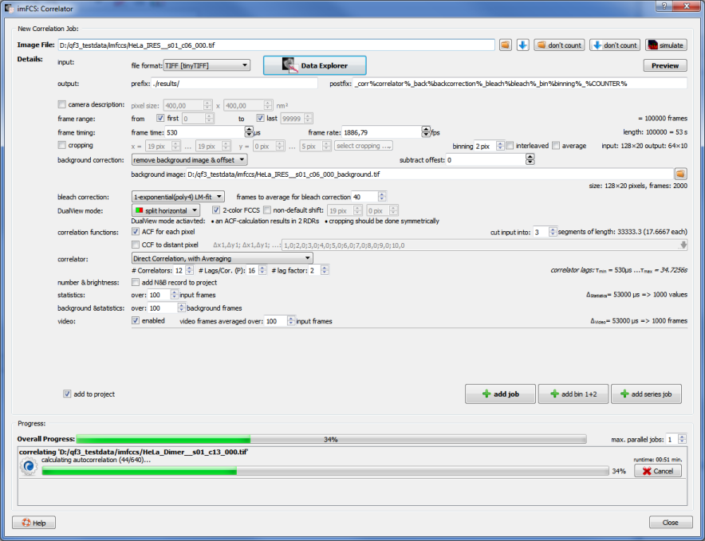
- Now start the correlation by clicking add job.
- Repeat the setps above for every file, you want to correlate. $$note:If you correlate several files, set the number of max. parallel jobs to a value of 1-3, depending on the amount of CPU cores and memory, that is available on your machine.$$
- When all correlations are finished, close the dialog by clicking Close. The results will be inserted into the project now:
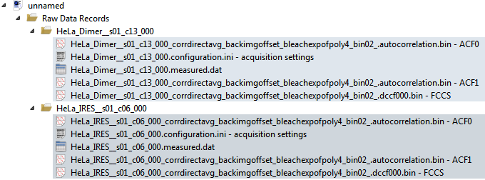
Prepare data for Fitting
As a next step the data has to be prepared for fitting. This mostly encompases creating masks and estimating the background intensity from these masked regions:
- Double-click the first FCCS-record in the project. This opens the imFCS RDR editor. Then select the tab "Parameter image":
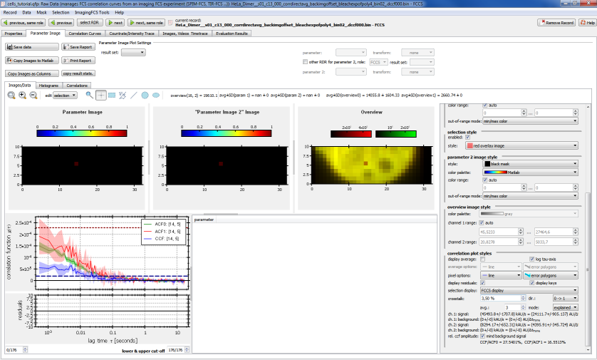
- Now we define a mask by segmenting the image by intensity. To do this, click on Mask | mask by overview:
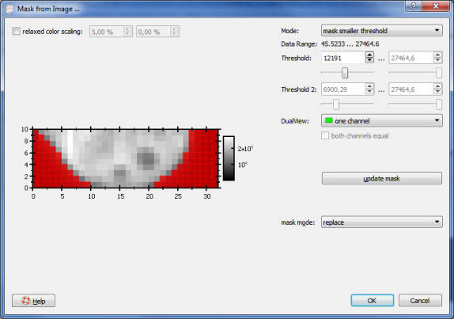
- In this dialog choose Mode = mask smaller threshold and move the threshold-slider, until the cell is masked properly (red pixels are masked). Finally click on OK.
- Now click on the rhs column of the RDR editor dialog on the button copy mask to group, which will reuse this mask for the two ACF-records (ACF0+ACF1).
- Finally click on the button background from mask, which will estimate the average intensity from the masked pixels. This is usually a good estimate of the true background intensity (including out-of-focus light and buffer scattering). QuickFit will ask you, whether to also estimate the background for the ACF0+ACF1 record. Answer this with "Yes".
- Now move to the next record (you can sue the button next, same role) and repeat the steps described above.
- When masks and background are set for all cells in the project, you can close the RDR editor window again.
Fit data
- Add an imFCCS evaluation to the project: Click on Data Items | Insert Evaluation | imFCCS Curve Fitting.
- Double-click the new evaluation record in the project:
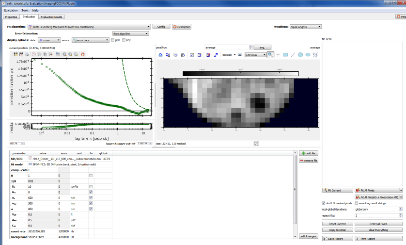
- First we have to set up the fit by choosing an appropriate fitting model. In principle this can be done by hand, but typically it is easier to use pre-configured models. These are availble in the Tools-menu. For the data at hand, choose Tools | configure for SPIM-FCCS | 2-comp. normal diffusion, species A+B+AB, c per species, D1/D2 per channel. This uses the model functions:
These models assume two species (G-single-labeled, R-single-labeled, GR-double-labeled) and two-component 3D diffusion. The model is slightly relaxed, as it does not assume two diffusion coefficents per species, but only per channel, which in most cases converges better (see $$ref:KRIEGER2014:Krieger J W, Singh A P, Garbe C S, Wohland T, Langowski J (2014) Dual-Color Fluorescence Cross-Correlation Spectroscopy on a Single Plane Illumination Microscope (SPIM-FCCS). Optics Express 22: 2358 Available at: http://www.opticsinfobase.org/abstract.cfm?URI=oe-22-3-2358$$ $$jankrieger_phdthesis_ref$$). The dialog the looks as follows:
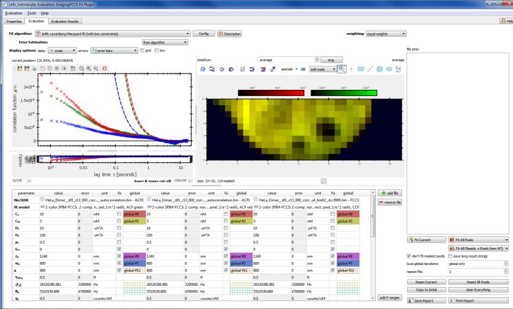
As you can observe now three correlation curves are displayed in the window. These are the averages over all non-masked pixels. If you want to see the correlation curves of a single pixel, you can choose any pixel by clicking into the overview image on the right. The bottom of the window shows the current fit parameters in a large table. The column global indicates, which parameters are linked together (equal color/pattern and global-parameter-name means the parameters are linked). The first row indicates, which files are displayed and the row below that shows the fitting model used for that file/RDR. The remaining rows show the fit parameters.
- Now we have to set proper initial parameters for the fit and configure the fit (parameter ranges etc.):
- Set the focus parameter $(w_g,w_r,z_g,z_r)$ and the cross-talk, as given above, or appropriate for your microscope.
- Also set the cross-talk $(\kappa=0.035)$ (for the example data)
- For many datasets (also the ones form this tutorial), it can also help to use only one component for the FCCS curve. To achieve this, set ρ2 of the FCCS RDR to 0. Then also fix D2 and .
- Finally also the parameter ranges should be set. To do so, activate the button edit P ranges at the bottom-rioght of the table. Additional column will appear for the parameter ranges. In these you should set:
- D1 (fast diffusion coefficient): 1...100μm2/s (slower diffusion will be described the D2 and faster diffusion is very uncommon in cells, since eGFP typically has a diffusion coefficient of around 30μm2/s.
- D2 (slow diffusion coefficient): 10-10...2μm2/s (experience shows that in cells typically a slow component in the range 0.1-1μm2/s is found)
- If you fixed D2 and ρ2, make sure to limit the parameter range of D1 to 10-10...100μm2/s instead of the values given above.
- for all concentrations, the minimum should be limited to 10-10nM, since the models may crash (division by 0), f, if several components have 0-concentration. On the other hand a value of 10-10nM is so low, it can be interpreted as 0 for all practical purposes.
- Set weighting = per run error, since QuickFit estimates an error for the correlation functions in each pixel, by calculating the standard deviation over the different segments during correlation.
- Set repeats=3. This will cause the plugin to repeat each fit three times consecutively, which often improves convergence.
Here is a screenshot of the completed table:
- Now we have to find good starting values for the fit: Choose a pixel with good correlation data and fit the models to it by clicking Fit Current.
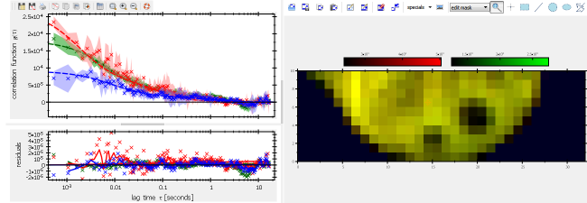
When the fit is good, as shown in the image above, set the concentrations (CA, CB, CAB) to about 1/10 of their current value. This hint comes from experience, as it seems that with these starting values, the fits seem to converge better. Now click on Copy to Initial, which will use the current fit results as initial values for all other fits.
$$note:If the fit does not properly converge for your dataset, it may help to use different starting parameters.$$
- As soon as the first fit is done, the files/RDR list on the rhs of the plugin is updated (before it was empty):
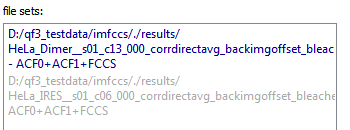
ρ2
Since the project contains two measurements (with 3 files in the same RDR group/folder each), this list also contains three items. Blue entries represent sets of files, for which a fit has already been done. The grey items were guessed by the plugin, based in the current RDRs. In the shown case, the plugin determined, that there is a second group of files ("IRES"), which contain an FCCS records and two ACFs, and which could therefore also be fitted with the same settings.
- Now you can click on Fit All Filesets + Pixels, which will fit all pixels in all (blue or grey) filesets in the list above.
- Finally you can check the fit results by clicking on randomly on several pixels in the overview image and choosing different filesets. If you are content with all the fits, you can close the fit fialog. Otherwise, you can reset the fit fo a singel file (Reset all pixel) or for all pixels in all fileset (Reset all), set new starting values and try the fit again. SOmetimes it may also help to change the parameter ranges, from the values proposed above.
Inspecting fit results
Finally you can inspect the fit results obtained above:
- Double-click again the FCCS RDR in the project tree and go to the tab "Parameter Image". It now does not only show the overview image, but also maps of the fit parameters. WHich parameters are desiplayed, you can choose with the comboboxes above the images. Choose these for the tutorial:
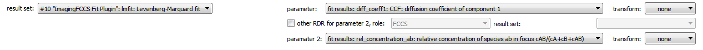
- If you compare the histograms (tab Histograms of the two files in the example dataset, you will get two distributiosn with averages $((\0.1pm0.06))$ for the dimers and $((0.05\pm0.05))$ for the monomers:
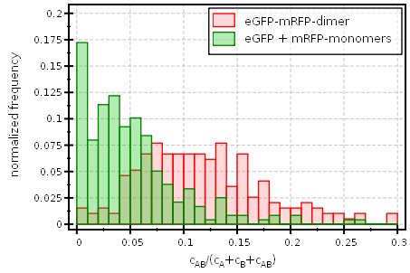
- To also check the fit results for D1,D2,rho2 of the green ACF, choose the ACF1-RDR of your file from the select RDR button:
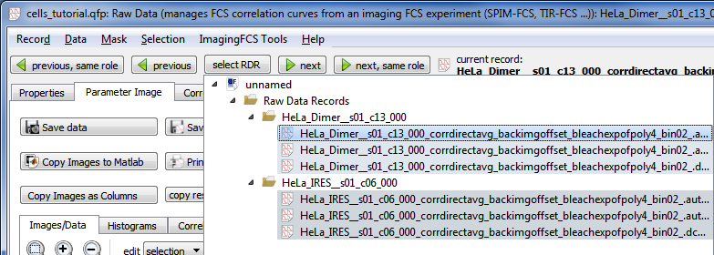
Now you have access to the desired parameters:
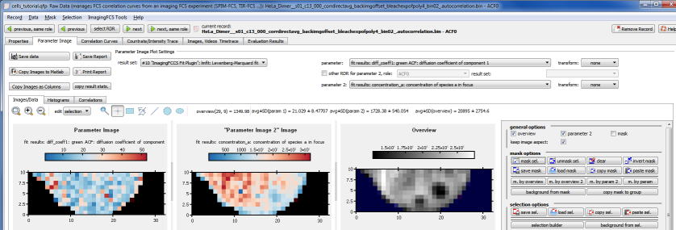
If you again change over to thetab Histograms you can also compare the histograms for the fast diffusion coefficient of the two samples:
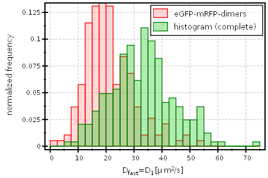
As you can see, the smaller monomers show a definite shift of the diffusion coefficients towards higher values. The averages of these distributions are: $((21\pm8)\mathrm{{\mu}m^2/s})$ for the dimers and $((33\pm11)\mathrm{{\mu}m^2/s})$ for the monomers.
References
$$references$$